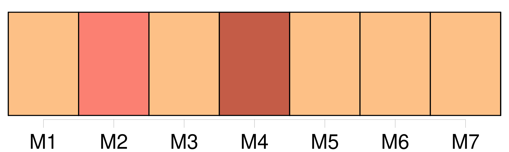
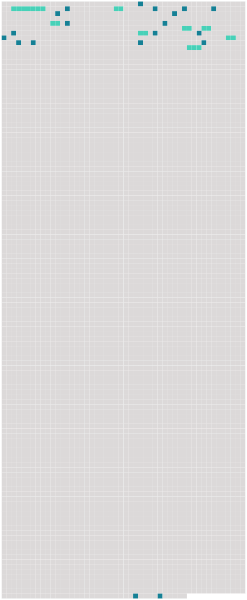

Longueur nb maillons : 27 mentions |
  |
Tout à coup le prêtre sursauta au bruit d'une voix, qui disait auprès de lui :
»
Le prêtre ne [l'] avait pas entendu arriver. — « Oui, [mon ami] , que puis -je faire pour [vous] ??
» [1 phrases]
» Je cours au presbytère, chercher ce qu'il me faut, et, dans un instant, je suis à [vous] [3 phrases]
Arrivé au jardin, il aperçut [le marin] , [qui] semblait l'attendre avec impatience : [2 phrases]
L'abbé Bernard essaya bien de poser quelques questions [au marin] , mais [celui -ci] ne l'entendit pas, sans doute, car [il] ne répondit pas.
Au bout d'une heure, à peu près, de cette navigation silencieuse, sur une mer très calme, [le marin] quitta [sa] machine et s'approchant du prêtre, lui [dit] , d'un ton très poli : [2 phrases] — « Il le faut », reprit [son compagnon] , sans rudesse, et [je] vous donne [ma] parole qu'il ne vous sera fait aucun mal.
» [1 phrases]
D'ailleurs, il n'était pas de force à lutter contre [le robuste matelot] [239 phrases] [on] m'enlève presque, [on] me bande les yeux …… |
 |
La ressource peut être téléchargée sur la page Ortolang
Si vous avez des questions ou vous voyez des erreurs, merci d'envoyer un mail à silvia.federzoni89@gmail.com
Site développé par S. Federzoni (contact)